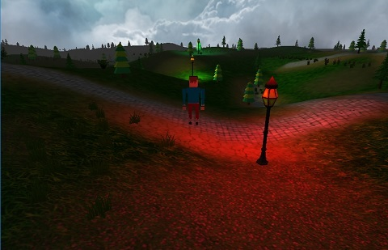

GLSLEngine
GlslEngine 是一个轻量级的虚拟现实开发工具，目前共有类26个，代码2310行。其内容主要涵盖了着色器、相机、场景控制、地形、天空盒等方面，是大家学习计算机图形学一个非常好的途径。该项目目前处于开源状态，大家可以通过Git方式获取、学习。

GlslEngine主要用到的库
Θ glew: GLEW是一个跨平台的C++扩展库，基于OpenGL图形接口。window目前只支持OpenGL1.1的涵数，但 OpenGL现在都发展到4.4以上了，要使用这些OpenGL的高级特性，就必须下载最新的扩展。
Θ glfw: 一个免费、开源、跨平台的OpenGL环境创建工具，并支持多屏显示、多种外设，取代了大家之前肯能较为熟悉的glut。
Θ Assimp: Open Asset Import Library，主要用于常用3D模型的加载，支持常见的3D模型格式大致有，3D Studio Max 3DS (3ds)、Wavefront Object (obj) 、Stanford Polygon Library (ply) 、Stereolithography (stl)等，关于更多的模型格式请参见Assimp文档。
Θ SOIL: Simple OpenGL Image Library， 该库用于加载图片，生成OpenGL环境中的纹理。支持的格式有BMP,PNG,JPG,TGA等。
学习参考资料
GlslEngine的参考视频
下载地址：http://pan.baidu.com/s/1jGrPI8u
LearnOpenGL
英文版：http://www.learnopengl.com/